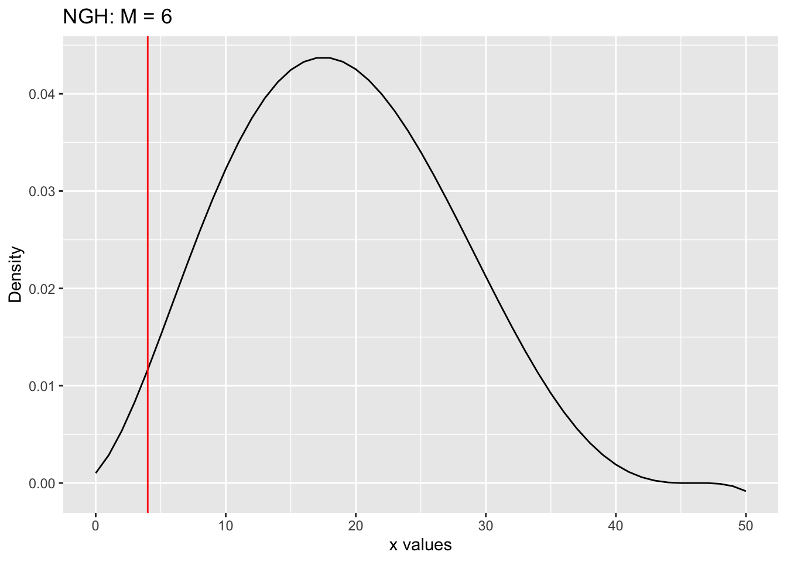

── Attaching core tidyverse packages ──────────────────────── tidyverse 2.0.0 ──
✔ dplyr 1.1.3 ✔ readr 2.1.4
✔ forcats 1.0.0 ✔ stringr 1.5.0
✔ ggplot2 3.4.3 ✔ tibble 3.2.1
✔ lubridate 1.9.2 ✔ tidyr 1.3.0
✔ purrr 1.0.2
── Conflicts ────────────────────────────────────────── tidyverse_conflicts() ──
✖ dplyr::filter() masks stats::filter()
✖ dplyr::lag() masks stats::lag()
✖ purrr::rdunif() masks extraDistr::rdunif()
ℹ Use the conflicted package (<http://conflicted.r-lib.org/>) to force all conflicts to become errors
# ngh_pmf = function(x, N, M, m) {# # m = # total successes (unknown) - (our notation: M)# m_pmf = M # # # n = # total failures - (our notation: X = N - M)# n_pmf = N - m_pmf # # # r = # fixed successes (our notation: m)# r_pmf = m # # # x = # balls being drawn (our notation: n = m + x) # x_pmf = r_pmf + x# # return(dnhyper(x = x_pmf, m = m_pmf, n = n_pmf, r = r_pmf))# }ngh_pmf =function(x, N, M, m) { numerator =choose(m + x -1, m -1) *choose(N - m - x, M - m) denominator =choose(N, M) result = numerator / denominatorreturn(result)}# Original (top): ngh_pmf(x = 0, N = 50, M = 50, m = 3) -> R crashes (end points doesn't work for coverage prob)# New (bottom): ngh_pmf(x = 0, N = 50, M = 50, m = 3) -> 1
ngh_cdf =function(x, N, M, m, lower_tail =TRUE) {# m = # total successes (unknown) - (our notation: M) m_pmf = M # n = # total failures - (our notation: X = N - M) n_pmf = N - m_pmf # r = # fixed successes (our notation: m) r_pmf = m # x = # balls being drawn (our notation: n = m + x) x_pmf = r_pmf + xreturn(pnhyper(q = x_pmf, m = m_pmf, n = n_pmf, r = r_pmf, lower.tail = lower_tail))}
Confidence Interval for M (total number of successes)
Testing: m = 3, x = 4, N = 50, Confidence Level = 0.95
Point Estimate of M
# M = 21: Point Estimate of M m =3x =4N =50M =21data =data.frame(x =seq(0, 50))data$y =ngh_pmf(x = (data$x), N = N, M = M, m = m)ggplot(data, aes(x = x, y = y)) +geom_line() +geom_vline(xintercept = x, color ="red") +ggtitle(paste("NGH: M =", M)) +xlab("x values") +ylab("Density")
Lower Bound
# Lower Bound# M = 6: Area to the left is just over (not under) 0.025 (alpha = 0.05)m =3x =4N =50M =6data =data.frame(x =seq(0, 50))data$y =ngh_pmf(x = (data$x), N = N, M = M, m = m)ggplot(data, aes(x = x, y = y)) +geom_line() +geom_vline(xintercept = x, color ="red") +ggtitle(paste("NGH: M =", M)) +xlab("x values") +ylab("Density")

area_left =ngh_cdf(x = x, N = N, M = M, m = m, lower_tail =TRUE)area_right =ngh_cdf(x = x -1, N = N, M = M, m = m, lower_tail =FALSE)print(paste("Area to the left of n =", m + x, "is:", area_left))
[1] "Area to the left of n = 7 is: 0.0292277873221444"
#print(paste("Area to the right of n =", m + x, "is:", area_right))
Upper Bound
# Upper Bound# M = 37: Area to the right is just over (not under) 0.025 (alpha = 0.05)m =3x =4N =50M =37data =data.frame(x =seq(0, 50))data$y =ngh_pmf(x = (data$x), N = N, M = M, m = m)# data$y = ngh_pmf(x = (data$x - m), N = N, M = M, m = m)ggplot(data, aes(x = x, y = y)) +geom_line() +geom_vline(xintercept = x, color ="red") +ggtitle(paste("NGH: M =", M)) +xlab("x values") +ylab("Density") +xlim(0, 10)
area_left =ngh_cdf(x = x, N = N, M = M, m = m, lower_tail =TRUE)area_right =ngh_cdf(x = x -1, N = N, M = M, m = m, lower_tail =FALSE)#print(paste("Area to the left of n =", m + x, "is:", area_left))print(paste("Area to the right of n =", m + x, "is:", area_right))
[1] "Area to the right of n = 7 is: 0.0330712303422759"
Confidence Interval Function
NGH_CI_Exact_Method <-function(m, x, N, conf_level =0.95) { target_probability = (1- conf_level) /2# Speical End Cases: When x in N-m to Nif ((x >= (N - m)) & (x <= N)) { lower_bound = N - x upper_bound = N - x }else { lower_bound = m upper_bound = N# Find lower boundfor (M in m:N) { area_left =ngh_cdf(x = x, N = N, M = M, m = m, lower_tail =TRUE)#if (area_left == target_probability) {if (isTRUE(all.equal(area_left, target_probability))) { lower_bound = Mbreak }elseif (area_left > target_probability) { lower_bound = Mbreak } }# Find upper boundfor (M in N:m) { area_right =ngh_cdf(x = x -1, N = N, M = M, m = m, lower_tail =FALSE)#if (area_right == target_probability) {if (isTRUE(all.equal(area_right, target_probability))) { upper_bound = Mbreak }elseif (area_right > target_probability) { upper_bound = M break } } } CL = (conf_level) *100return(cat(CL, "% Confidence Interval for M: [", lower_bound, ",", upper_bound, "]\n"))}
Testing Confidence Interval Function
# Debany: n = 3 (m + x)# Debany CI: [15.3488, 49.9993]m =3x =0N =50conf_level =0.95NGH_CI_Exact_Method(m, x, N, conf_level)
95 % Confidence Interval for M: [ 16 , 50 ]
# Debany: n = 4 (m + x)# Debany CI: [10.4493, 48.9993]m =3x =1N =50conf_level =0.95NGH_CI_Exact_Method(m, x, N, conf_level)
95 % Confidence Interval for M: [ 11 , 49 ]
# Debany: n = 5 (m + x)# Debany CI: [8.0846, 46.1811]m =3x =2N =50conf_level =0.95NGH_CI_Exact_Method(m, x, N, conf_level)
95 % Confidence Interval for M: [ 9 , 46 ]
# Debany: n = 6 (m + x)# Debany CI: [6.6705, 41.9156]m =3x =3N =50conf_level =0.95NGH_CI_Exact_Method(m, x, N, conf_level)
95 % Confidence Interval for M: [ 7 , 41 ]
# Debany: n = 7 (m + x)# Debany CI: [5.7249, 37.8620]m =3x =4N =50conf_level =0.95NGH_CI_Exact_Method(m, x, N, conf_level)
95 % Confidence Interval for M: [ 6 , 37 ]
# Debany: n = 8 (m + x)# Debany CI: [5.0489, 34.2853]m =3x =5N =50conf_level =0.95NGH_CI_Exact_Method(m, x, N, conf_level)
95 % Confidence Interval for M: [ 6 , 34 ]
# Debany: n = 9 (m + x)# Debany CI: [4.5421, 31.1894]m =3x =6N =50conf_level =0.95NGH_CI_Exact_Method(m, x, N, conf_level)
95 % Confidence Interval for M: [ 5 , 31 ]
# Debany: n = 10 (m + x)# Debany CI: [4.1493, 28.5182]m =3x =7N =50conf_level =0.95NGH_CI_Exact_Method(m, x, N, conf_level)
95 % Confidence Interval for M: [ 5 , 28 ]
Cal Poly COVID Example: CI for M
set.seed(8) # Total number of studentsN =21778# Number of positive studentsM =1293# Number of positives to observe in samplingm =100# Create a vector representing the populationpopulation =c(rep(1, M), rep(0, N - M)) # 1 represents positive, 0 represents negative# Sample until we get 100 positivessample_positives =function(population, m) { positives_count =0 negatives_count =0 total_samples =0while (positives_count < m) { sample =sample(population, 1) total_samples = total_samples +1if (sample ==1) { positives_count = positives_count +1 } else { negatives_count = negatives_count +1 } }return(list(total_samples = total_samples, negatives_count = negatives_count))}# Run the samplingresult =sample_positives(population, m)total_samples = result$total_samplesnegatives_count = result$negatives_countcat("Total samples taken to get 100 positives: ", total_samples, "\n")
Total samples taken to get 100 positives: 1657
cat("Number of negatives observed before getting 100 positives: ", negatives_count, "\n")
Number of negatives observed before getting 100 positives: 1557
m =100x =1557N =21778conf_level =0.95NGH_CI_Exact_Method(m, x, N, conf_level)
95 % Confidence Interval for M: [ 1084 , 1564 ]
Coverage Probability for M
CI_cov_prob <-function(N, m, conf_level =0.95) { target_probability = (1- conf_level) /2#results = data.frame(x = 0:(N - m), lower_bound = NA, upper_bound = NA) results =data.frame(x =0:(N), lower_bound =NA, upper_bound =NA)#for (xi in 0:(N - m)) {for (xi in0:(N)) {# Speical End Cases: When x in N-m to Nif ((xi >= (N - m)) & (xi <= N)) { lower_bound = N - xi upper_bound = N - xi }else { lower_bound = m upper_bound = N# Find lower boundfor (M in m:N) { area_left =ngh_cdf(x = xi, N = N, M = M, m = m, lower_tail =TRUE)#if (area_left == target_probability) {if (isTRUE(all.equal(area_left, target_probability))) { lower_bound = Mbreak }elseif (area_left > target_probability) { lower_bound = Mbreak } }# Find upper boundfor (M in N:m) { area_right =ngh_cdf(x = xi -1, N = N, M = M, m = m, lower_tail =FALSE)#if (area_right == target_probability) {if (isTRUE(all.equal(area_right, target_probability))) { upper_bound = Mbreak }elseif (area_right > target_probability) { upper_bound = Mbreak } } }# Store the results results[xi +1, "lower_bound"] = lower_bound results[xi +1, "upper_bound"] = upper_bound }return(results)}
coverage_prob <-function(M, N, m, conf_level =0.95) {# if (M < m || M > N) {# stop("Invalid parameters: Ensure M >= m, M <= N")# }# Calculates all confidence intervals ci_results =CI_cov_prob(N, m, conf_level)# Finds all x's where M is in the confidence interval covered_x = ci_results %>%filter(lower_bound <= M & upper_bound >= M) %>%pull(x)if (length(covered_x) ==0) {return(data.frame(M = M, coverage_prob =NA, min_x =NA, max_x =NA)) }# Finds the min and max of covered x's to know which lines to connect in plot min_x =min(covered_x, na.rm =TRUE) max_x =max(covered_x, na.rm =TRUE)# Sums the probabilities (pmf's) of all x's where M is in the CI #total_prob = sum(sapply(covered_x, function(x) ngh_pmf(x, N, M, m))) total_prob =sum(unlist(lapply(covered_x, function(x) ngh_pmf(x, N, M, m))))return(data.frame(M = M, coverage_prob = total_prob, min_x = min_x, max_x = max_x))}
N = 20, m = 3, Confidence Level = 0.95
Coverage Probability = 0 when M = 0, 1, 2
N =20m =3conf_level =0.95M_values =0:Ncoverage_df =do.call(rbind, lapply(M_values, function(M) coverage_prob(M, N, m, conf_level)))# Create a group column for consistent min_x and max_x# The group column assigns a unique group number whenever there is a change in min_x or max_x values# cumsum is used to create a cumulative sum that increments the group number whenever there is a# change in min_x or max_xcoverage_df = coverage_df %>%mutate(group =cumsum(c(1, diff(min_x) !=0|diff(max_x) !=0)))ggplot(coverage_df, aes(x = M, y = coverage_prob, group = group)) +geom_line() +geom_point() +labs(x ="M", y ="Coverage Probability of M") +geom_hline(yintercept = conf_level, color ="red") +# ylim(0, 1) +ylim(conf_level -0.005, 1) +theme_minimal()
N =50m =3conf_level =0.95M_values =0:Ncoverage_df =do.call(rbind, lapply(M_values, function(M) coverage_prob(M, N, m, conf_level)))# Create a group column for consistent min_x and max_x# The group column assigns a unique group number whenever there is a change in min_x or max_x values# cumsum is used to create a cumulative sum that increments the group number whenever there is a# change in min_x or max_xcoverage_df = coverage_df %>%mutate(group =cumsum(c(1, diff(min_x) !=0|diff(max_x) !=0)))ggplot(coverage_df, aes(x = M, y = coverage_prob, group = group)) +geom_line() +geom_point() +labs(x ="M", y ="Coverage Probability of M") +geom_hline(yintercept = conf_level, color ="red") +ylim(conf_level -0.005, 1) +theme_minimal()
N =100m =3conf_level =0.95M_values =0:Ncoverage_df =do.call(rbind, lapply(M_values, function(M) coverage_prob(M, N, m, conf_level)))# Create a group column for consistent min_x and max_x# The group column assigns a unique group number whenever there is a change in min_x or max_x values# cumsum is used to create a cumulative sum that increments the group number whenever there is a# change in min_x or max_xcoverage_df = coverage_df %>%mutate(group =cumsum(c(1, diff(min_x) !=0|diff(max_x) !=0)))ggplot(coverage_df, aes(x = M, y = coverage_prob, group = group)) +geom_line() +geom_point() +labs(x ="M", y ="Coverage Probability of M") +geom_hline(yintercept = conf_level, color ="red") +ylim(conf_level -0.005, 1) +theme_minimal()
test <-function(M, N, m, conf_level =0.95) {# if (M < m || M > N) {# stop("Invalid parameters: Ensure M >= m, M <= N")# }# Calculates all confidence intervals ci_results =CI_cov_prob(N, m, conf_level)# Finds all x's where M is in the confidence interval covered_x = ci_results %>%filter(lower_bound <= M & upper_bound >= M) %>%pull(x)# Finds the min and max of covered x's to know which lines to connect in plot min_x =min(covered_x) max_x =max(covered_x)# Sums the probabilities (pmf's) of all x's where M is in the CI #total_prob = sum(sapply(covered_x, function(x) ngh_pmf(x, N, M, m))) total_prob =sum(unlist(lapply(covered_x, function(x) ngh_pmf(x, N, M, m))))return(covered_x)}# test(M = 0, N = 50, m = 3)# test(M = 1, N = 50, m = 3)# test(M = 2, N = 50, m = 3)# test(M = 3, N = 50, m = 3)# test(M = 4, N = 50, m = 3)# test(M = 5, N = 50, m = 3)# test(M = 6, N = 50, m = 3)# test(M = 7, N = 50, m = 3)# test(M = 8, N = 50, m = 3)# test(M = 9, N = 50, m = 3)# test(M = 10, N = 50, m = 3)# test(M = 11, N = 50, m = 3)# test(M = 12, N = 50, m = 3)# test(M = 13, N = 50, m = 3)# test(M = 14, N = 50, m = 3)test(M =15, N =50, m =3)
[1] 1 2 3 4 5 6 7 8 9 10 11 12 13 14 15 16
test(M =16, N =50, m =3)
[1] 0 1 2 3 4 5 6 7 8 9 10 11 12 13 14 15
test(M =17, N =50, m =3)
[1] 0 1 2 3 4 5 6 7 8 9 10 11 12 13 14
test(M =18, N =50, m =3)
[1] 0 1 2 3 4 5 6 7 8 9 10 11 12 13
test(M =19, N =50, m =3)
[1] 0 1 2 3 4 5 6 7 8 9 10 11 12
test(M =20, N =50, m =3)
[1] 0 1 2 3 4 5 6 7 8 9 10 11
test(M =21, N =50, m =3)
[1] 0 1 2 3 4 5 6 7 8 9 10
# test(M = 22, N = 50, m = 3)# test(M = 23, N = 50, m = 3)# test(M = 24, N = 50, m = 3)# test(M = 25, N = 50, m = 3)# test(M = 26, N = 50, m = 3)# test(M = 27, N = 50, m = 3)# test(M = 28, N = 50, m = 3)# test(M = 29, N = 50, m = 3)# test(M = 30, N = 50, m = 3)# test(M = 31, N = 50, m = 3)# test(M = 32, N = 50, m = 3)# test(M = 33, N = 50, m = 3)# test(M = 34, N = 50, m = 3)# test(M = 35, N = 50, m = 3)# test(M = 36, N = 50, m = 3)# test(M = 37, N = 50, m = 3)# test(M = 38, N = 50, m = 3)# test(M = 39, N = 50, m = 3)# test(M = 40, N = 50, m = 3)# test(M = 41, N = 50, m = 3)# test(M = 42, N = 50, m = 3)# test(M = 43, N = 50, m = 3)# test(M = 44, N = 50, m = 3)# test(M = 45, N = 50, m = 3)# test(M = 46, N = 50, m = 3)# test(M = 47, N = 50, m = 3)# test(M = 48, N = 50, m = 3)# test(M = 49, N = 50, m = 3)#test(M = 50, N = 50, m = 3)
conf_level=0.95ggplot(data, aes(x = M, y = Coverage.Probability, group = X.s.Set, color = X.s.Set)) +geom_line() +geom_point() +labs(x ="M", y ="Coverage Probability of M") +geom_hline(yintercept = conf_level, color ="red") +ylim(conf_level -0.005, 1) +theme_minimal() +theme(legend.position ="none")